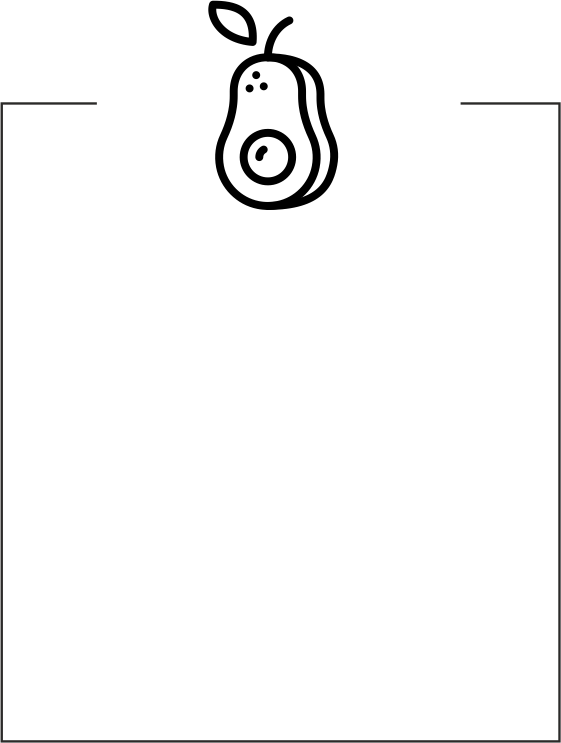

ODKRYJ
PIELĘGNACJĘ STÓP W 3 KROKACH
Niezależnie od Twojego trybu życia, wieku i typu skóry, nasza misja brzmi zawsze tak samo:
TROSKA NA KAŻDYM KROKU.
Piękne i zadbane stopy to nie tylko komfort, ale
też pewność siebie, która pozwala
poczuć się swobodnie, niezależnie od sytuacji.
PROFERSJONALNY ZABIEG W TRZECH KROKACH
ZMIĘKCZ
ZŁUSZCZ
NAWILŻAJ
POZNAJ BLIŻEJ LINIE NAPPY
-
Produkt z serii nawilżająco-uspokajającej
polecany jest suchej, odwodnionej
i pozbawionej elastyczności skórze stóp.
Dba o odpowiedni poziom nawilżenia, zapewniając przy tym maksymalne odświeżenie i tonizację naskórka. - Produkty z serii relaksująco-zmiękczającej szczególnie polecane są do zmęczonej, twardniejącej i potrzebującej odżywienia skóry stóp. Działają odprężająco poprzez wygładzenie i poprawę elastyczności, dbając przy tym o odpowiednie nawilżenie.
- Produkt z serii złuszczająco-wygładzającącej doskonale nadaje się dla szorstkiej, zrogowaciałej i podrażnionej skóry stóp. Rewitalizuje i wygładza, zapewniając miękkość i ochronę przed wysuszeniem oraz nadmiernym rogowaceniem.
JAKIE STĘŻENIE MOCZNIKA WYBRAĆ?
w stężeniu
30%
złuszczające
i wygładzające
w stężeniu
15%
zmiękczające,
zwiększające
przepuszczalność
warstwy rogowej
CO SPRAWIA, ŻE PRODUKTY
Z LINII NAPPA SĄ WYJĄTKOWE?
POZNAJ BLIŻEJ SKŁADNIKI AKTYWNE NAPPY
-
OLEJEK
SZAŁWIOWYDziałanie:
- łagodzące,
- antyoksydacyjne,
- odświeżające
-
OLEJ
BRZOSKWINIOWYDziałanie:
- tonizujące,
- odżywiające,
- nawilżające
-
 OLEJ
Z AWOKADODziałanie:
- regenerujące,
- nawilżające,
- ochronne
-

OLEJ
LNIANYDziałanie:
- regenerujące,
- ujędrniające,
- antyoksydacyjne
-
OLEJ
MOCZNIKDziałanie:
- nawilżające,
- zmiękczające,
- regenerujące
-
OLEJ
GLICERYNADziałanie:
- nawilżające,
- ochronne,
- łagodzące
-

OLEJ
LANOLINADziałanie:
- natłuszczające,
- zmiękczające,
- ochronne
-
OLEJ
WITAMINA EDziałanie:
- antyoksydacyjne,
- ujędrniające,
- ochronne

- SUBSTANCJE AKTYWNE W CODZIENNEJ PIELĘGNACJI STÓP | Jak dbać o stopy?
- JAK DOBRAĆ STĘŻENIE MOCZNIKA W PIELĘGNACJI Jak nawilżyć suche stopy?
- PEDICURE TO NIE TYLKO PAZNOKCIE! | Jak poradzić sobie z problemami stóp?
- PEELING W PIELĘGNACJI STÓP | Dlaczego i jak go używać?
- JAK WYGŁADZIĆ I NAWILŻYĆ STOPY | Pielęgnacja suchej i szorstkiej skóry
- RECEPTA NA DOMOWĄ
PIELĘGNACJĘ STÓP
Produkty na każdą potrzebę -
PIELĘGNACJA STÓP
KROK PO KROKU - SPORT A ZDROWIE
I HIGIENA STÓP